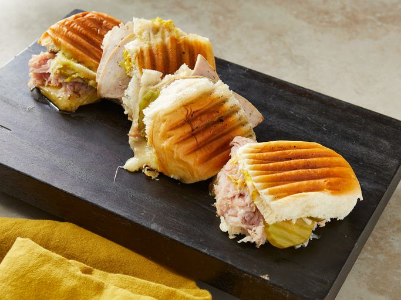

Cuban Sandwich

This is one of the more famous sandwiches straight out of the island of Cuba. This recipe came from my
uncle who used to work at a restaurant in Pinar del Rio, Cuba and now works at a Cuban cafeteria here in Miami. This sandwich
is best served with fried plantain chips and a cold mamey milkshake!
Ingredients
- 4 Sweet bread rolls
- 1/2 cup mayonnaise
- 1/4 cup prepared mustard
- 1 pound thinly sliced cooked ham
- 1 pound thinly sliced fully cooked pork
- 1 pound sliced Swiss cheese
- 1 cup dill pickle slices
- 2 tablespoons of butter, melted
Directions
- Split the sandwich rolls in half, and spread mustad and mayonnaise liberally onto the cut sides.
- On each sandwich, place and equal amount of Swiss cheese, ham and pork in exactly that order. Place a few pickles onto each
one, and put the top of the roll onto the sandwich. Brush the tops with melted butter.
- Press each sandwich in a sandwich press heated to medium-high heat. If a sandwich press is not available, use a large skillet
over medium-high heat, and press the sandwiches down using a sturdy plate or skillet. Some indoor grills may be good for this also.
Cook for 5 to 8 minutes, keeping sandwiches pressed. If using a skillet, you may want to flip them once for even browning.
- Slice diagonally and serve hot.